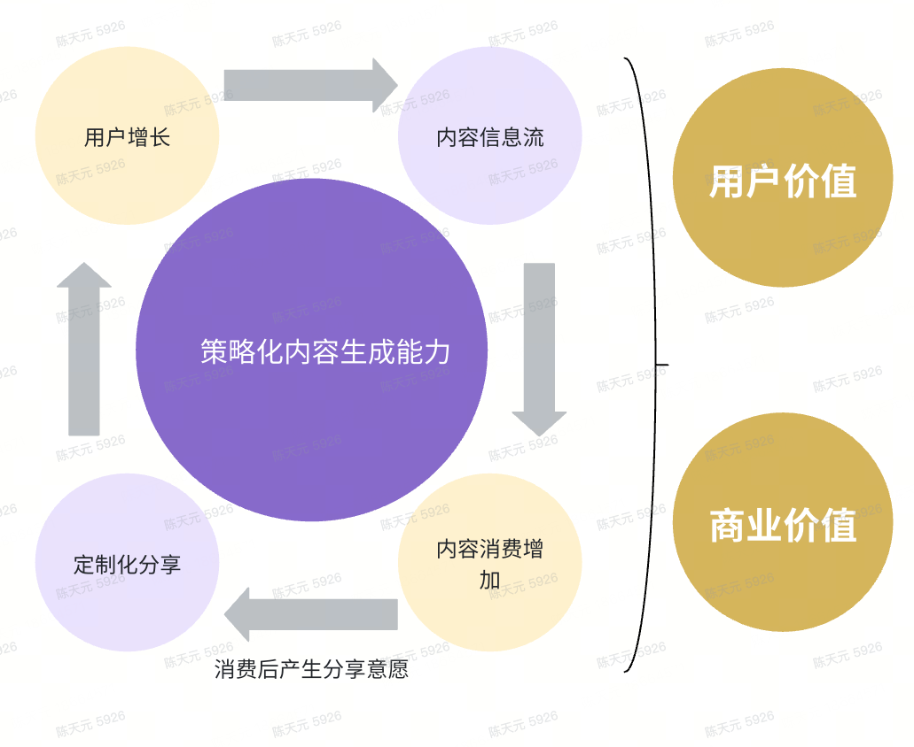
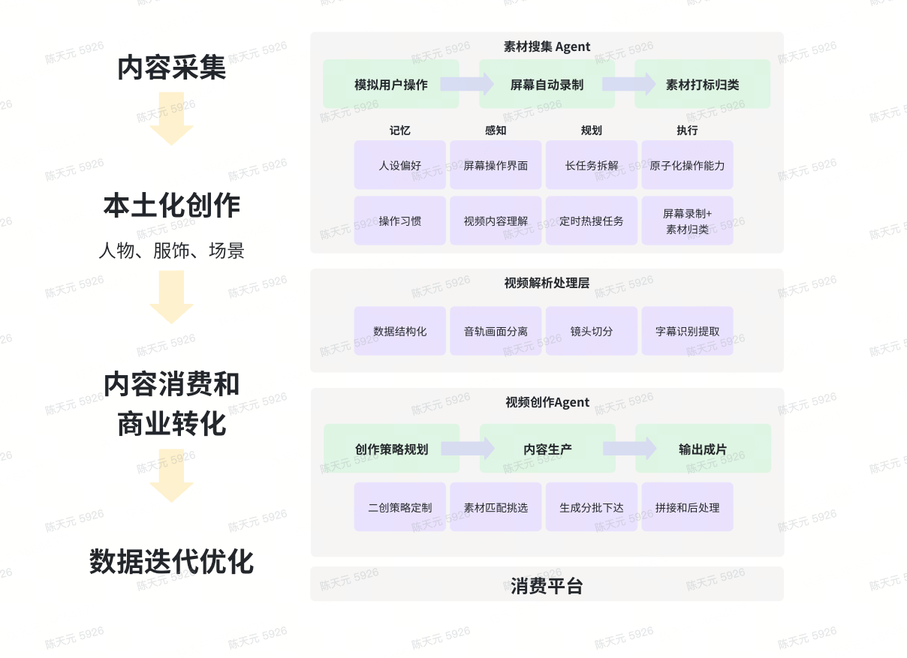
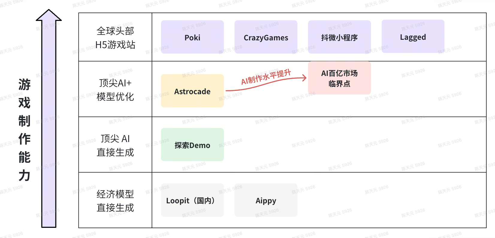
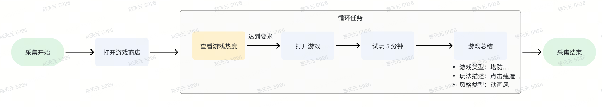
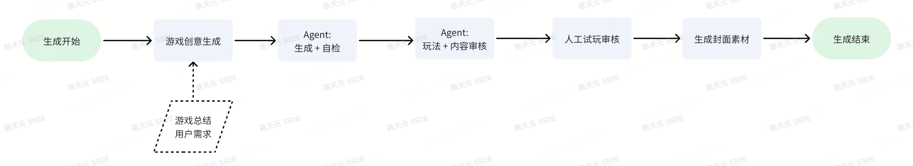
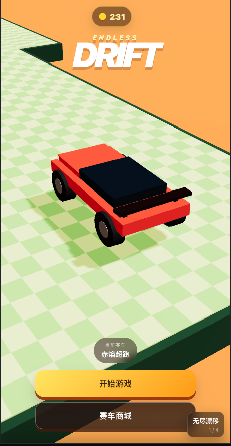
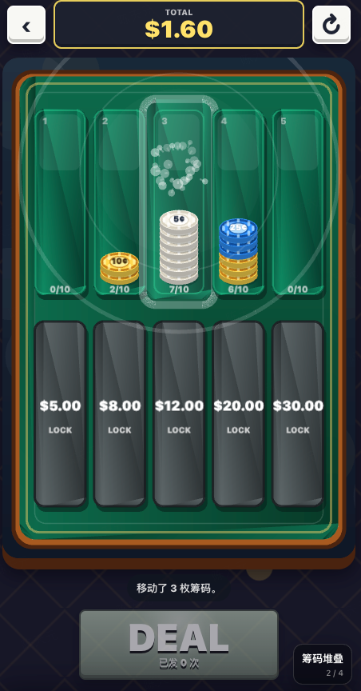

01
内容生成
图片 · 视频
验证 AI 内容生成能力在 C 端创作与消费场景中的应用。
02 / 前期 AI 探索
从接近落地的 C 端消费场景切入
开展技术验证内容生成
验证 AI 内容生成能力在 C 端创作与消费场景中的应用。
代码生成
将 AI 的代码能力直接转化为可消费级游戏
02 / 前期 AI 探索
构建“生成策略定制”能力，打造产出 高质量、低成本、定制化 生成的 AI 内容工厂。


02 / 前期 AI 探索
02 / 前期 AI 探索
当下小游戏市场规模
$10亿级别AI 制作能力已靠近
游戏工作室水平
02 / 前期 AI 探索


02 / 前期 AI 探索
按住右漂漂移，松开反打并回正。
不驶出赛道、不掉落，刷新行驶距离最高纪录。

筹码版「水排序 / 堆叠合成」游戏。
每个槽位是一摞筹码，移动最外层相同筹码，合成大额筹码。
